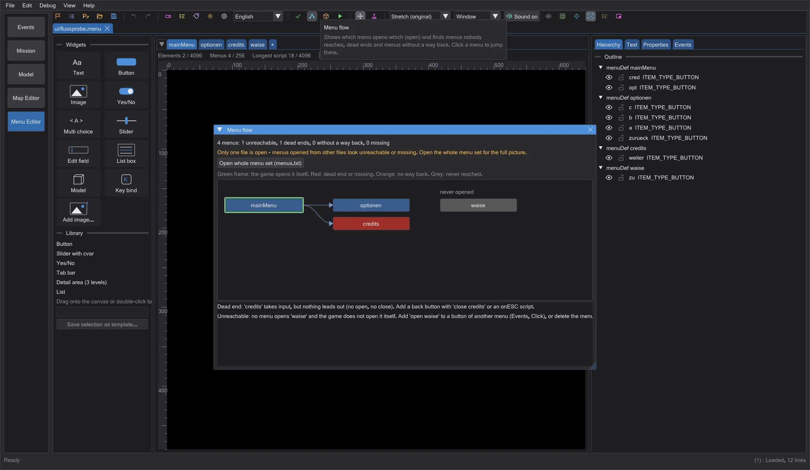
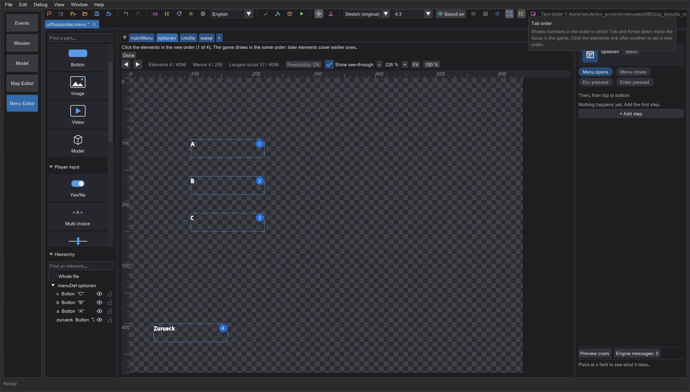
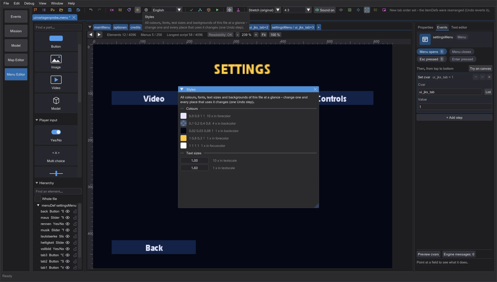
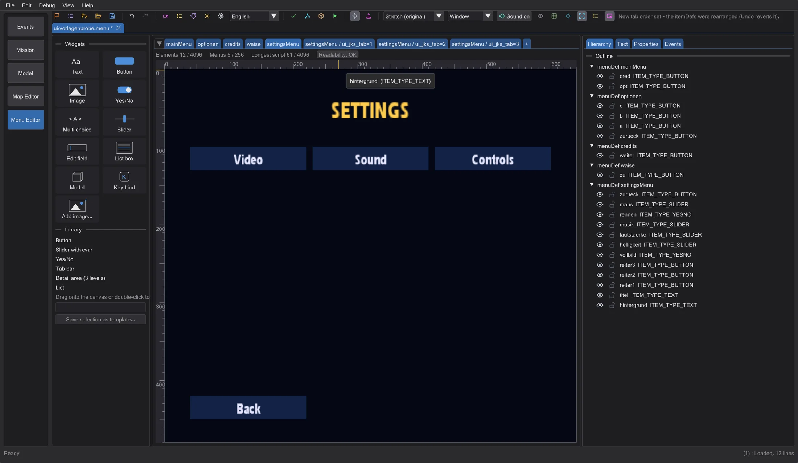
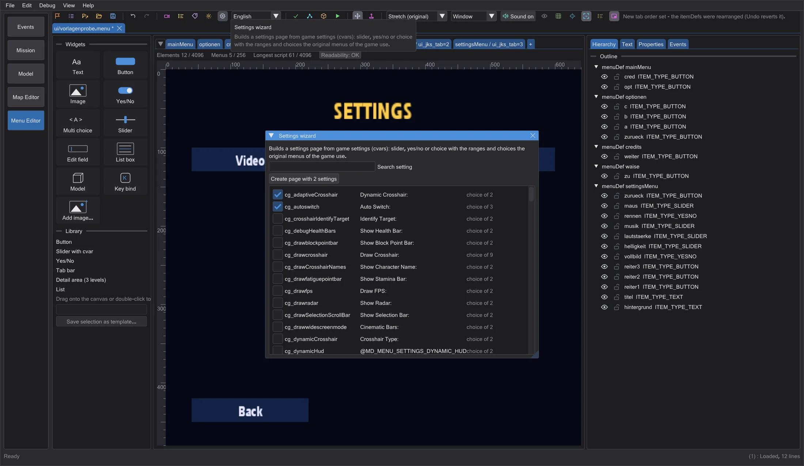
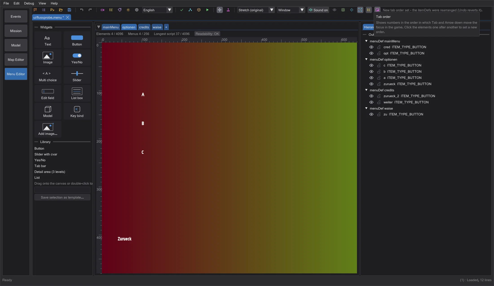
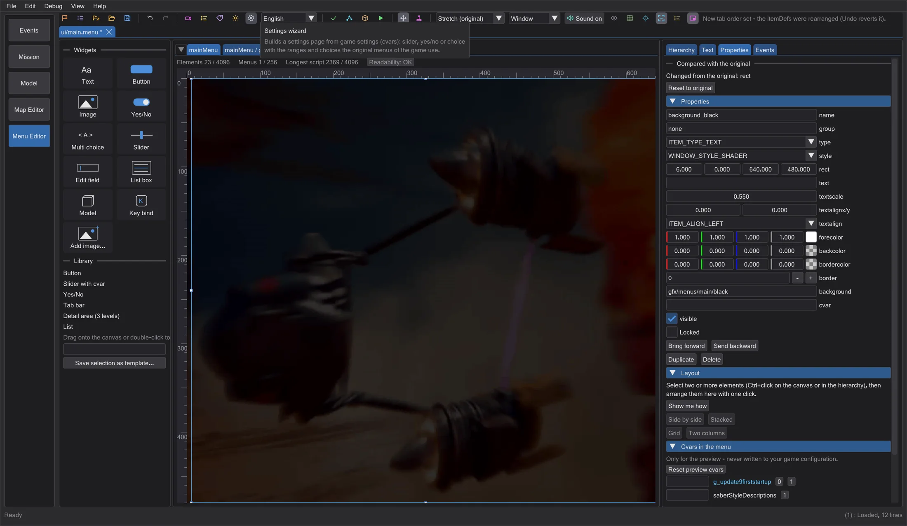

Menu editor: flow, tab order, styles and templates
See which menu opens which and where players get stuck, set the keyboard order with clicks, change colours and fonts everywhere at once, start from ready-made menus or a settings wizard, trace a design over a reference image and reset elements to the game's original.
Menu flow#

Imagen aún en inglésMenu flow in the toolbar shows every menu of the open files as a box and every open as an arrow, column by column from the menus the game opens itself (green frame: the main menu, the loading screen, the in-game menus - taken from the engine code). Red boxes are dead ends - they take input but nothing leads out - or targets that no open file defines; orange boxes are opened from another menu but have no way back (no close of themselves, no onESC, no open of the menu they came from); grey boxes are never reached. The list below says in plain words what to do. Click a box or a line of the list to jump to that menu. Open the whole menu set first, otherwise menus from other files look missing.
Tab order#

Imagen aún en inglésTab order puts a number on every element that can take the keyboard focus, in the order the engine uses (Menu_SetNextCursorItem: the order of the itemDefs, without decorations, hidden elements and elements switched off by a cvar; from no focus the game starts at the second element of the file). To change it, click the elements one after another in the new order - after the last click the editor rearranges the itemDefs (one Undo step). The game draws in the same order, so a later element lies over an earlier one; elements that cannot take the focus stay where they are.
Styles#

Imagen aún en inglésStyles collects every colour (forecolor, backcolor, bordercolor, outlinecolor, focusColor, disableColor, descColor), font, text size and background of the file - the most used first. Change a value and every place that uses it changes at once, as ordinary values in the .menu (spacing, comments and quotes stay; one Undo step). Values from #include files or macros are counted but stay as they are.
Templates and settings wizard#

Imagen aún en inglésThe + next to the pages offers Empty page or a whole menu: Main menu (the game opens it at the start), Settings page with tabs, Credits and Loading screen (the game shows it while loading). They use only keywords every game version reads; the main menu and the loading screen get the names the engine looks for (single player mainMenu and loadscreen, multiplayer main and Connect), and the main menu opens the settings and credits templates - the menu flow shows the result without problems.

Imagen aún en inglésSettings wizard lists every game setting (cvar) that the original menus of the game offer, with the control they use there: a slider with its range, yes/no, or a choice with its entries. Tick the settings you want and click the button below the search field - the editor adds a settings page with these controls, a title and a back button.
Reference image, original and limits#

Imagen aún en inglésReference image places a PNG, JPG or TGA semi-transparently on the canvas, under the menu or - when a full-screen background covers it - over it (Over the menu), with adjustable Opacity. It is only a drawing aid and never goes into the menu or the pk3.

Imagen aún en inglésFor a menu from the game, the Properties show in Compared with the original whether the selected element differs from the game's original file and in which keywords; Reset to original puts the original itemDef back (one Undo step). Below the pages, a line shows how full the menu is against the limits of the game version - elements per menu, menus and the longest script - orange from 80 percent, red at the limit, because beyond it the game silently drops the rest.
Next to the limits, Readability counts hints with guide values of the editor (not limits of the game): text lower than 8 points on the 640 x 480 screen, contrast below 3:1 on filled areas, and texts that fit their field in one language of the game but not in another (measured with the game's fonts and the texts of every language in the game data). Hover for the list with solutions; click to select the next element with a hint.
Closing a tab with unsaved changes now asks first: save, close without saving, or cancel.